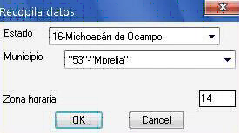

Al comenzar el proceso el primer dato requerido por el programa es la poligonal geo
referenciada, la poligonal tiene que estar previamente trazada antes de ejecutar el programa,
(en caso de tener una poligonal con muchos vértices, se recomienda trazar una poligonal mas
simplificada para optimizar en redibujado del programa).
Selección adecuada de la zona horaria UTM
Una vez seleccionada la poligonal que abarca la zona de estudio, se verá un cuadro de dialogo
como el mostrado en la figura 1, el cual tiene la función de simplificar la selección de la zona
horaria en la que se encuentra dibujada nuestra poligonal, la forma de simplificar o ayudar en la
selección de la zona horaria es simple, seleccionamos el estado y municipio de la zona de
estudio y el cuadro de dialogo nos propone la zona horaria en que normalmente seria dibujada
la poligonal, y en algunos casos podemos encontrar que el municipio abarca según su posición
geográfica varias zonas horarias, en este caso el dialogo nos mostrara todas las zonas posibles
en el municipio, en caso de saber en qué zona horaria esta dibujada la poligonal se puede omitir
la selección de estadoy municipio y solamente teclear la zona de horaria con un dato numérico
de 2 dígitos (“14”, en caso de Morelia, Mich.).

Una vez seleccionada la poligonal y la zona horaria comienza la búsqueda de las estaciones más
cercanas con una distancia proporcional al tamaño de la zona en estudio, si la distancia de
búsqueda es muy pequeña y no se localizan estaciones, el programa realizara algunas
iteraciones modificando la distancia de búsqueda hasta encontrar una o más estaciones, en este
caso el programa nos mostrara un dialogo avisando que se está ajustando la distancia de
búsqueda, figura 2